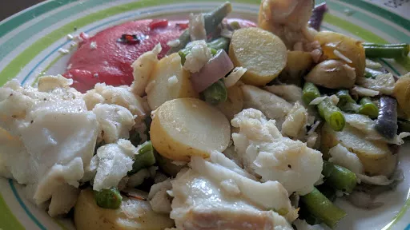

Sizzling summer cod

Servings: 2
Total: 20 mins
Ingredients
- 250 g jar roasted mixed peppers with herbs
- 250 g new potatoes, thickly sliced
- 1 red onion, cut into wedges
- 140 g green beans, trimmed and halved widthways
- 2x 175 g chunky cod fillets, skin on
- ½ lemon
- crusty bread, to serve
Instructions
- Pour the oil from the jar of
peppers250 g jar
into a deep frying pan with a lid. Heat the oil until bubbling, then tip in the potatoes250 g
and onion1
and toss in the oil. Cook for 5 minutes, stirring every now and then, until the potatoes250 g
begin to turn golden.
- Carefully pour most of the oil out of the frying pan, leaving about 1 tbsp remaining.
- Add the
beans140 g
and the drained peppers250 g jar
, season and stir until well mixed.
- Lay the
fish2x 175 g
, skin side down, on top of the vegetables. Cover than pan and cook over a medium heat for 5 minutes or until the fish2x 175 g
flakes easily and the vegetables are tender.
- Squeeze the
lemon½
over the fish2x 175 g
and serve with crusty bread.
-
kcal
337
-
fat
8 g
-
saturates
1 g
-
carbs
32 g
-
sugar
0 g
-
fibre
5 g
-
protein
37 g
-
salt
0.48 g
BBC Good Food: One-pot Dishes
Short Link
Long Link